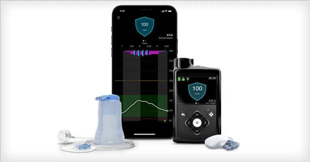
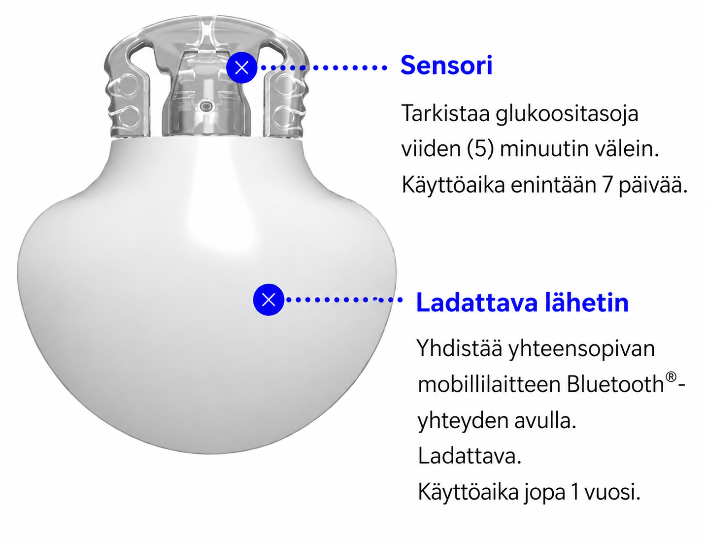
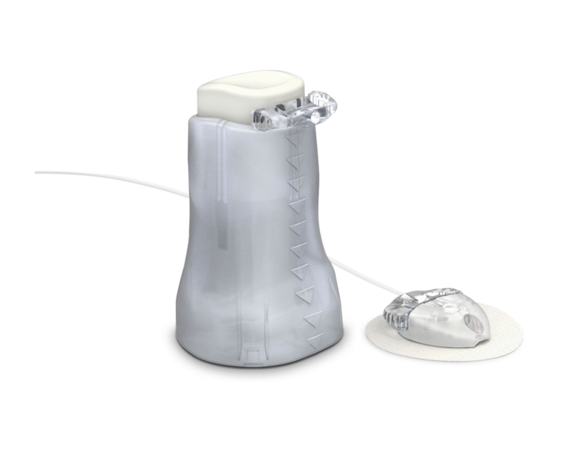
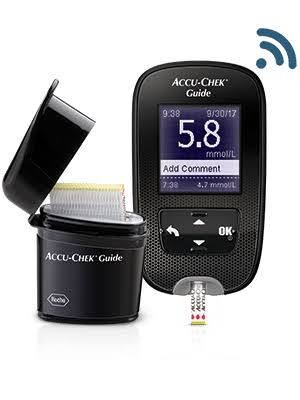
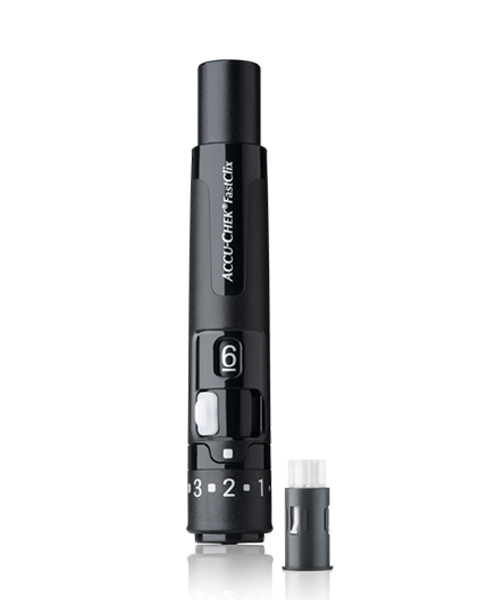
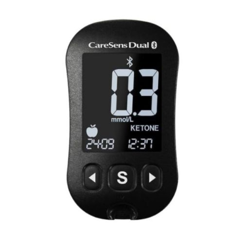
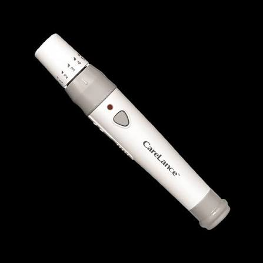

💉 Diabeteksen hoitovälineet
Lapsen diabeteksen hoidossa käytetään useita välineitä verensokerin seurantaan, insuliinin annosteluun sekä poikkeustilanteiden hallintaan.

Kuvassa näkyvät diabeteksen hoidon keskeiset välineet: insuliinipumppu, sensori, lähetin sekä infuusiosetti.
💉 Insuliinipumppu
Insuliinipumppu annostelee insuliinia lapsen henkilökohtaisen hoitosuunnitelman mukaisesti.
Pumpun avulla:
- annetaan ateriaboluksia
- tehdään tarvittaessa korjauksia
- seurataan sensorin glukoosiarvoa (SG)
📡 Sensori ja lähetin

Sensori mittaa jatkuvasti glukoosiarvoa (SG) ja lähettää tiedon pumpulle lähettimen avulla.
Sensorin tietoja seurataan yhdessä:
- sensorin glukoosiarvon (SG)
- trendinuolten
- lapsen voinnin
🔗 Kanyyli ja infuusiosetti

Infuusiosetti yhdistää insuliinipumpun ja lapsen ihon alle asetetun kanyylin.
Kanyyli asetetaan ihon alle ja siitä lähtee letku insuliinipumpulle.
Kanyyli sijaitsee lapsella useimmiten pakaran alueella.
Infuusiosetin kautta pumppu annostelee insuliinia lapselle.
Poikkeustilanteissa tarkistetaan:
- Onko kanyyli paikoillaan?
- Onko letku kunnolla kiinni pumpussa ja kanyylissa?
- Onko letku irti, taittunut tai vaurioitunut?
🩸 Verensokerin mittaus
Accu-Chek Guide -verensokerimittari

Verensokerimittaria käytetään sormenpäämittaukseen tilanteissa, joissa tarvitaan tarkka verensokeriarvo.
Verensokerimittaria käytetään esimerkiksi:
- sensorin lukeman tarkistamiseen
- jos lapsen vointi ei vastaa sensorin näyttämää arvoa
- 0 g korjaustilanteessa pumpun ohjeen mukaisesti
- sensoriongelmatilanteissa
Verensokerimittauksen vaiheet
-
Aseta verensokeriliuska mittariin.
Mittari käynnistyy automaattisesti, kun liuska asetetaan paikalleen. - Ota verinäyte Accu-Chek FastClix -pistimellä.
- Anna veripisaran imeytyä liuskaan.
- Odota mittarin ilmoittamaa tulosta.
- Pyyhi mahdollinen veri paperilla ja käytä tarvittaessa laastaria.
🔘 Accu-Chek FastClix -pistin

Accu-Chek FastClix on verinäytteen ottamiseen tarkoitettu pistin, jota käytetään yhdessä Accu-Chek Guide -verensokerimittarin kanssa.
Laitteessa käytetään 6 neulan rumpujärjestelmää.
Tämä tarkoittaa, että:
- Yhdessä rummussa on kuusi käyttövalmista neulaa.
- Samaa neulaa voidaan käyttää useamman kerran.
- Seuraava neula otetaan käyttöön siirtämällä laitteen keskiosassa olevaa valkoista valitsinta.
- Kun kaikki kuusi neulaa on käytetty, vanhemmat vaihtavat uuden neularummun.
Neulaa vaihdetaan yleensä muutaman päivän välein.
Pistoksen tekeminen
- Aseta pistin sormen sivuun.
- Paina laukaisupainiketta.
- Ota tarvittava veripisara verensokerimittausta varten.
Pistos tehdään mieluiten sormen sivuun, koska se on yleensä vähemmän herkkä kohta.
Vältä mittaamista peukalosta ja pikkusormesta.
🧪 Ketoainemittaus
CareSens Dual -ketoainemittari

Ketoainemittaria käytetään veren ketoarvojen mittaamiseen.
Ketoarvoja tarkistetaan erityisesti:
- pitkittyneessä korkeassa verensokerissa
- jos lapsi voi huonosti
- korkean verensokerin ohjeen mukaisesti
Ketoarvon mittauksen vaiheet
-
Aseta ketoaineliuska mittariin.
Mittari käynnistyy automaattisesti, kun liuska asetetaan paikalleen. - Ota verinäyte CareLance-pistimellä.
- Anna veripisaran imeytyä ketoaineliuskaan.
- Odota mittarin ilmoittamaa ketoarvoa.
CareLance-pistin

CareLance on ketoainemittauksen yhteydessä käytettävä pistin, jolla otetaan verinäyte ketoarvon mittaamista varten.
Pistos tehdään samalla periaatteella kuin verensokerimittauksessa:
- käytä mieluiten sormen sivua
- vältä peukaloa ja pikkusormea
- pyyhi ylimääräinen veri tarvittaessa paperilla
Ketoainemittauksen tarvikkeet
- CareSens Dual -ketoainemittari
- CareLance-pistin
- KetoSens-liuskat
🧻 Muut mukana olevat tarvikkeet
Lapsella on mukana kaksi erillistä pientä vetoketjutaskua.
🩸 Verensokerimittauksen tarvikkeet
- Accu-Chek Guide -verensokerimittari
- Accu-Chek FastClix -pistin
- verensokeriliuskat
- laastareita
- paperia veripisaroiden pyyhintään
🧪 Ketoainemittauksen tarvikkeet
- CareSens Dual -ketoainemittari
- CareLance-pistin
- KetoSens-liuskat
- laastareita
- paperia veripisaroiden pyyhintään
✅ Muista
- Käytä oikeaa välinettä oikeaan tilanteeseen.
- Sensorin lukemaa arvioidaan aina yhdessä trendinuolen ja lapsen voinnin kanssa.
- Sensorin ja infuusiosetin vaihtaminen kuuluu huoltajalle.
- Epäselvissä tilanteissa ota yhteys huoltajaan.